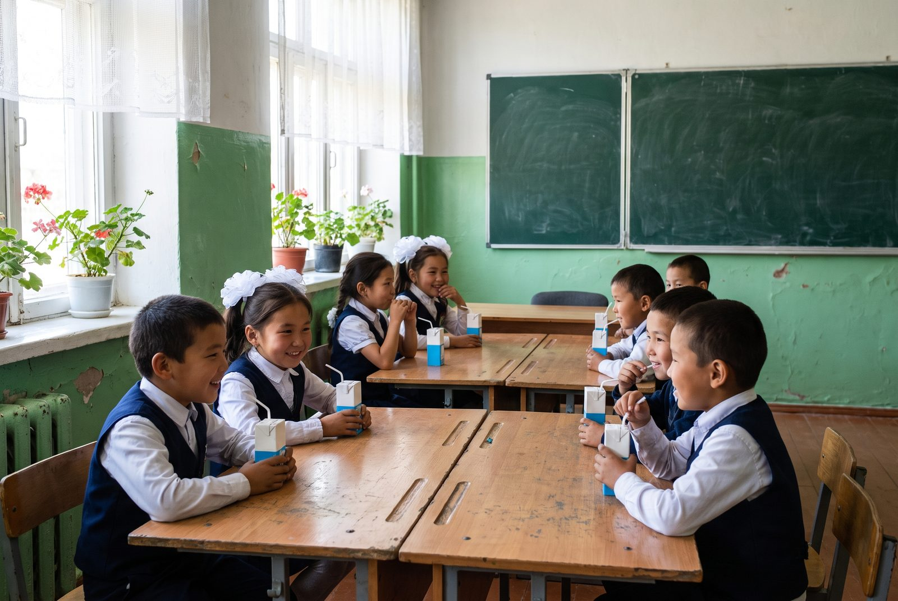
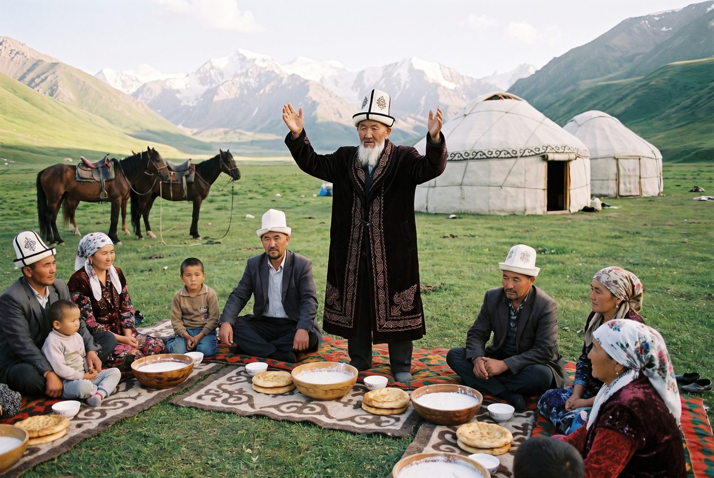

From the Combine, the collection routes and the pastures. For press questions write to press@talas-sut.com.
School milk returns to 140 Talas schools

From Monday every pupil in years one to four at the city's state schools gets a 200 ml carton of milk or kefir each school day, the first time since the programme was cut back in 2019. The cartons are paid for jointly by the Combine and the city education department and delivered with the morning rounds to the shops.
"Most of us at the Combine drank our school milk from this plant," said General Director Damira Sharipova. "The cooperative voted in April to bring it back, and the city met us halfway." The programme runs to the end of the winter term in May, and the board will decide on next year at the spring meeting.
The kymyz season closes
The last Ak Bee kymyz of 2026 was bottled this morning, as the herds come down from the Talas Alatau pastures. Over the season the Combine bottled 1.38 million bottles from the milk of 212 herding families, up from 1.26 million last year, after a wet June kept the high grass long.
Ak Bee will be in the shops for a few more days. The first kymyz of 2027 will be bottled after the kymyz muryndyk next May. Summer contracts for 2027 open on 1 March.
Beet suzma now in Nurzhan
Our beet suzma, made in Talas since 2014 and until now sold only in the Talas valley, is now on the shelves of every Bereke and Jıldız Market in Nurzhan. The 400 g tub is the same red suzma Talas families serve with their Sunday plov.
"Our Nurzhan customers kept asking relatives in Talas to bring it on the bus," said Chief Technologist Viktor Lim. "It made more sense to put it on the night van."
Kymyz muryndyk opens the season

Herding families, Combine staff and neighbours gathered on the pastures above Orto-Ayyl on Sunday for the kymyz muryndyk. After the elder's blessing and the first shared bowl, the collection trucks went up the next morning, and the first bottles of Ak Bee reached the shops on Wednesday.
New milk prices for suppliers from 1 April
The Cooperative Board has raised the price for Grade 1 cow's milk to 3.45 som a litre from 1 April, and for Extra grade to 3.85 som. Mare's milk for the summer contracts will be paid at 9.80 som a litre. The full price list is on our page for farmers.
The general meeting of the Talas Valley Milk Cooperative takes place on 18 April at the Combine's hall. Members receive their papers through their collection point.